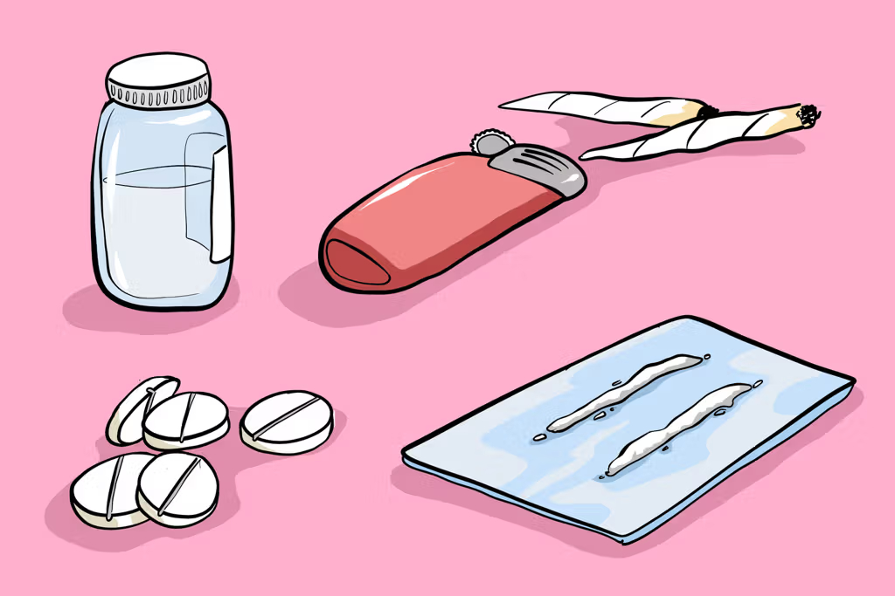
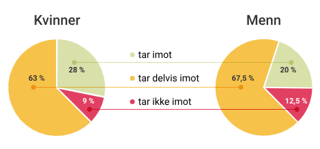
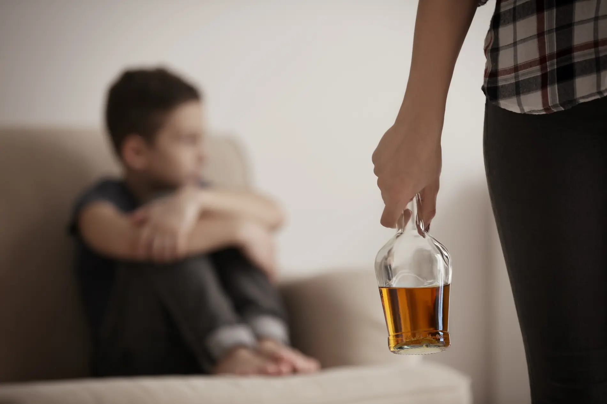

Under her ligger det en nydelig "Fredags podcast"! Vi forteller dere om kropp og helse. Med et innblikk i rusmidler.
Fredags podcast
Del 1: Intro
Del 2: Hovuddel
Kva er rusmidler?
Rusmidler er avhengihet skapende middler du får i deg. Det er farlig å kan legge igjen skader for resten av livet. Det finnes veldig mange ulike typer rusmidler. Rusmidler har til felles at dei inneholder verkestoff som påvirker hjernen og nervesystemet. Rusmidler gir oss en følelse av velvære. Man får også mer impulsive tanker. Over tid vil rusmiddel påvirke kroppen negativ og nokre vil påvirke den meir negativt enn andre. Det er både positive og negative sider ved rusmidler for samfunnet. En positiv effekt er for eksempel at rusmiddler kan hjelpe de som trenger det. For eksempel legemiddler, behandling og helsehjelp. Noken rusmidler brukes i medisinske stoff, feks smertelindrende og angstdempene legemiddler. Noken bruker også rusmidler for å slappe av og koble ut.  Korleis påvirker rusmidler samfunnet?Rusmidler påvirker samfunnet sterkt. På fleire måtar og ulike nivå. Når en person ruser seg, går det ut over pårørende og familie. Det er krevende for familiemedlemmer og tilpasse rusmisbrukeren. Ikkje berre det men også arbeidsplassen din, og kollegaer. Rus er dyrbart, og koster mykje for samfunnets økonomi. Rus kan vende heile samfunnet mot deg.
Ansatte og ulike verktøy må bli brukt for hjelp til å redusere individes bruk av rusmidler. Det er kostbart for staten når ansatte må bruke mykje tid på rusmisbrukere. I tillegg koster medisiner og legemidler mykje penger. F.eks har ikkje mange rusmisbrukere god råd siden de ikke fungerer i arbeidslivet. Legemidler koster mykje, og derfor er det livsnødvendig for rusmisbrukere og ha tilgang til legemidler som de trenger. Noko som ansatte må ta tid og ansvar for.
 Ifølge statistikken angående rusmidler i samfunnet. Viser det at: 28% Kvinner tar imot rusmidler, 63% tar delvis imot og kun 9% tar ikke imot rusmidler. Omtrent 20% Menn tar imot rusmidler, 67,5% tar delvis imot og 12,5% tar ikke imot. Alkohol og skadevirkningerAlkohol er Norges mest brukte rusmiddel. Når du drikker alkohol blir du påvirket på flere punkt. Vedkommende sin sinnsstemning og atferd vil forandres. Noko som kan få familie og venner til og føle at du bryter deres grenser. F. eks kan du få sinneproblemer eller voldsproblemer. Dette kan igjen føre til at vedkommende blir ført vekk fra familien og venner, eller vil vedkommende bare bli mindre tilgjenglig. For barn og unge er dette svært skremmende.
Rusmisbrukerens skadevirkninger vil påvirke familielivet, økonomien, følelsene og oppførselen til familiemedlemmene. Ein barndom kan bli snudd på hodet. På grunn av livsopplevelser og deretter dårlig oppdragelse. I verste fall kan det føre til at vedkommende trekker seg mot dårlige miljø. F. eks rusmiljø, fordi det er enkelt og der driver du med det samme. Eit barn kan føle på eit fellesskap. Noko som vedkommende ikke har opplevd i oppveksten.
